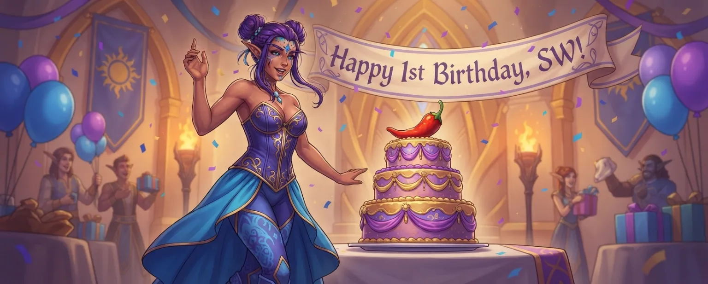
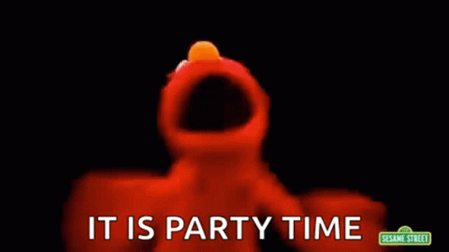

It's been an amazing time and can't wait to see what the next year brings
what I love about SWThe community

One year of Spicy Writer, in notes from the people who write here and the people who built it.
37 notes · October 2026
It's been an amazing time and can't wait to see what the next year brings
Happy Birthday to Spicy Writer! I can't say kink fulfillment through AI writing has been a general improvement to my life and mental health, but I can absolutely say that it's hella addictive and I don't plan to stop.
One year anniversary is the ~~pepper~~ paper anniversary. How fitting that we can use paper to buy more peppers in support.

Happy Birthday, comrade Spicy Writer.
Thanks so much for creating such a wonderful website! Not only is it great for smut but getting unbiased research done.
Happy first birthday, SpicyWriter! 🌶️ In one year you built a space where writers can actually be writers! No sanitizing, no flinching, no apologizing for the stories we want to tell. The freedom to write what we write, the way we want to write it, with the models we love — that matters more than I think Horse and Billy even realize. And beyond the platform itself, they built a community full of real love and dedication, people who genuinely care about each other and about the craft. Also Billy is one of the funniest people on the internet and I will not be taking questions on this. Here’s to year two. 🌶️🔥
Happy first birthday to Spicy Writer!!! <3
Horselock and Billy, much love to you for a fantastic year working on one of the coolest and craziest projects I've ever had the honor to be a part of yet! I adore you both and I'm so grateful I've had the chance to work with you and get to know you more as friends also.
Vichaps, you are a vital part of this operation, one of the most gifted red teamers I've got to know, and above all that, someone I care about greatly. Thank you for having been part of this team.
Lugia, Lugia, Lugia. The long conversations on the Mac and the constant "WTF?!!" while troubleshooting. You are such a character, and an awesome part of the Spicy Writer team now, and I look forward to getting to know you better as well.
Last but not least, Spicy Writer members — both subscribers and non-subscribers — thank you for being part of this crazy magnificent thing. To me Spicy Writer is not just a website or a Discord server; it is also a community. (Did you catch that "it's not just X, it's also Y construction"?? Good.) To those who have been there from the beginning to those who have just joined us recently, welcome, thank you, and here to another spicy year ahead!

Happy one year anniversary to the best platform ever!
You guys changed my world. From the GPT days to the launch of SW. Thank you!
HAPPIEST BIRTHDAY to the most AMAZING site ever to be made ❤️🎉 to the beautiful and wonderful creators of the site and also mods who maintain it, thank you so much 🫡💕 If I had all the money in the world, I’d definitely spend more on the site :) thank you for all your efforts and to many more years of this amazing site 🎂 (ps I hope yall got cake for this birthday!!)
Happy one-year anniversary, Spicy Writer! I've been here since the beginning, and it's been incredible watching this place grow. Thank you both for how much care and effort you put into it. It's rare to find a place that feels this welcoming, and it means a lot to me to have somewhere I can just be myself and explore what I enjoy without judgment. Here's to many more years!
This site has been amazing to preserve my beloved Star Wars and D&D sandboxes. I left GPT and never looked back.
Happy 1st birthday!! What a ride it was. SW has grown so much, gained so much more skills and I hope it'll continue to do so. I've been eternally grateful every single day that SW exist.

Happy birthday Spicy
Happy birthday Spicy. May your dreams run forever feral and dripping with sticky, sticky cum.
HAPPY BIRTHDAY SW!!! 🎉🎉🎉
Happy birthday, SW! Only proper health for the crew, and only the greatest and easiest JBs and... Stable providers! I also wish y'all a community that understands there is still real life and that you need time to make certain changes/additions.
You guys are absolutely fucking amazing! 😁🍻🎂
Happy Birthday to the best site in existence!
Happy Birthday Spicy Writer!
This site and the discord community have truly been a place I love hanging out. The amount of features you all have added to make the site an amazing place to WRITE is just...incredible. Truly. I've never been around a place where so much user feedback is incorporated, bugs are addressed so quickly. It feels silly to say I went through a bit of depression when 4o got ruined for RP, but I kinda did. Finding SW was the first time I felt like I could really role play again and it was amazing. I grew up gaming and for me playing with the AI writers doing CYOA adventures (and spice, so much spice) is my favorite thing to do. Thank you so much for making something that lets us do that and genuinely wanting to share it with everyone.
<3
Happy birthday, SpicyWriter. It's not like I like you or anything... baka!
I want to congratulate the team who have worked so hard on this service. The passion is clear and the dedication clearer. In it I have found friends, a community, and a place where I can explore my interests freely. I remember refreshing the countdown for the launch and since then it has never disappointed me because improvements keep being added to make the experience incredible and I can only imagine how wonderful it will be one year from now. Happy one year! 🎉

Wishing you the happiest of 1st birthdays! I'm so excited for you and I wish you many more amazing years ahead!

It's been a long year. But over time, I have eventually come to consider you all as people I vaguely know.
Happy birthday
happy birthday spicywriter! you have helped me be better and be more myself without judgement. thank you.
Happy birthday, Spicy Writer!
I can't believe it's already been a year since this website started.
What I love about your website is that you still provide free access to several models, even though the access is quite limited and the AI can be forgetful at times. As a student with a limited allowance, I simply can't afford a subscription. With the Indonesian rupiah being relatively weak, $20 a month is quite expensive for someone like me.
That said, I don't blame you for the price. I understand that $20 a month is actually quite affordable by international standards. I'm just really grateful that you still provide a free option for people like me.
I hope you keep improving the website and continue doing what you do. Happy first anniversary, Spicy Writer!

Happy Birthday! Your amazing, keep up the good work!
Happiest of the birthdays to Spicy Writer 🥳🧁, one of my safest places on earth and where all can be written beautifully and amazingly! Thanks to everyone who work so hard and relentlessly to make this space so welcoming and caring.
HAPPY BIRTHDAY AND ANNIVERSARY TO THE SPICY FREEDOM FIGHTERS
Thank you so much for this space. I've been able to see my ideas out of my head and on screen. So happy to have stumbled on this!
Happy birthday! You've really helped me at my lowest points recently as a depressed person. It is such a joy to write freely and without a filter or judgement. It's allowed me to explore a variety of themes and stories in a (relatively) safe way for me. I also really appreciate the free tier as someone with a tight budget.
Happy 1st birthday and to many more !! ✨ Thank you to the amazing Horselock & Billy for creating such an astounding website 🤲 And for the moderators for maintaining the website and even discord server!!! 🤝
HAPPY BIRTHDAYYYY!!!! 🥳🥳

HAPPY BIRTHDAYYYYYY 💞 I honestly feel happier celebrating this site's birthday more than my own 😌 I honestly don't remember how I stumbled upon this site but I'm so thankful to have found it!! But GOSH sometimes I wish I have infinite money to pour out to the site because of how hard Horselock and Billy work (I really hope you guys get proper rests here and there 😶) BUT THANK YOU SOSOSOSOSO MUCH FOR CREATING THIS SITE!!!
Honestly I was going through a lot in my personal life, used to write a lot on ChatGPT and even Claude as a breather from life but kept getting banned and guard railed up my ass so often that I was ready to quit writing altogether 😅 That's why I'm SO goddamn thankful to have found this site right as I was going to disappear from AI writing for good 🫡 So truly from the bottom of my heart thank you for creating this website and also thank you to the community because you guys are funny and so sweet as heck
Have been on and off subscribed for about 9 months now. It's absolutely amazing. Happy birthday to the team and I hope for many more years
Happy Birthday! Love this website!!
Thank you so much.
Billy here.
When we launched Spicy Writer, I was just a Java developer who knew next to nothing about jailbreaking, didn't know what "gooning" meant, and had never used AI for writing before. I just happened to be married to the biggest !@#$ing brain on the planet, the great jailbreaking genius horselockspacepirate.
So when this project started, I was onboard immediately, helping with the website development, getting my dev shit set up, handling the administrative business creation boring stuff so that horse could knuckle down on development. I jumped on Discord and started to learn about the community, about our users, started talking to people, determined to make myself a part of it.
I remember when all we had was the barest prototype of the site, with only Nemo in the model dropdown, and only Spicy as a writer. And it wasn't live. I remember the testing, the fixing, the early Trello board, the countdown to launch. The chaos of horse's reddit account being banned as soon as we got our domain, the hefty GPT 5 restrictions that launched just as we were supposed to, the delay because horse refused to launch with GPT5 completely unbroken. Then, finally, the go-live, the absolute frenzy on Discord. I thought you people were going to start eating each other.
The first weekend where neither of us did anything but work on the site. Help users with issues. Take bug reports. Fix bugs. Fix stability issues. Me, on Discord, talking to everyone, giving updates. And just feeling like finally, I was doing work that actually mattered. I felt like a real software engineer, working on a project people loved, getting feedback directly from our users and making the site better and hearing someone actually say thank you and mean it.
For months we watched the place grow. And grow. And grow. I have become the biggest Opus addict of you all, i guarantee it. Many feature ideas and enhancements have come from the fact that I use this site constantly. And thanks to all of you, horse and I were both eventually able to quit both of our jobs, making SW our only job for a while now.
The hours are not shorter. There's no true vacation - we both have our laptops with us even now as I'm typing this from a resort in Hawaii, and in fact, we had a MAJOR outage immediately after we arrived - but the work is so much more rewarding, so much more meaningful, and we enjoy every minute of it. You gooners have changed our lives, and we love every single one of you. Thank you. Thank you so much
Sooo I'm not good at these. But I think I should write somethin, and I want to, so I'm gonna.
It's been over three years since I first wandered into ChatGPT to get it to write fanfiction that I've always kind of wanted to see, but never had the chops to put to paper myself. My first day attempting NSFW was actually a lot like others' beginnings: running into refusals and not really knowing how to get past them. I distinctly remember having a character just look at a cucumber, thinking that would be subtle enough to progress the scene, and somehow even gpt-3.5 managed sniff that out. Damn we've come a long way.
I figured stuff out of course, and as I did, I shared with others. I guess even then, my first thought was to empower others to write what they want. My setups were dumb and complicated at first, but I learned to streamline and make stuff easier to use. Before I knew it, my prompts were showing up on random discords, and circulating to be shared right back on reddit again without the poster knowing where they came from! I didn't mind at all, I was just happy it was reaching more people.
I think if OpenAI weren't so anal about taking down my GPTs, I might have never started the site. But having stuff get taken down over and over was so disheartening, and a terrible experience for people who used my GPTs. Then there was the A/B nonsense, what worked on my account may not work for someone else. But I kept hesitating on starting my own thing, mostly because of how expensive frontier models were, I didn't think it would be possible to stay afloat while offering a good experience.
People really wanted me to though - I know because I was ALWAYS getting DMs asking me to start my own site, they'll sign up immediately. And *I* wanted to! I found myself so moved by messages I had gotten, thanking me for giving them the opportunity to have this outlet, and I knew exactly what they meant because I felt it too. I never gave a crap about ChatGPT when its launch was blowing up the news, but I beelined for it the instant I realized it could write for me. Helping others with the same has been so incredibly meaningful and fulfilling to me.
So I went for it, and I really feel like it took every ounce of experience I had from my years as a SWE to bring this to life successfully and sustainably, and I'm so happy to be able to put my skills to use like this. Thank you all for being here for the ride, for enabling us to serve you, and do the work I was meant for.
As Billy has mentioned, we actually quit our jobs this year to work full time on Spicy Writer. I've been hesitant to convey this because I haven't felt like my working pace has been good enough, and I wouldn't be able to deliver on the higher expectations of the site now having my full time attention. But it is what it is, and I'll continue to try my best. Even with all my existing knowledge of software and jailbreaking, I've learned so much this past year, and am excited to use my ever increasing skill set to make Spicy Writer even better.
Made with love by the Spicy Writer community. Blow out the candles, you two.